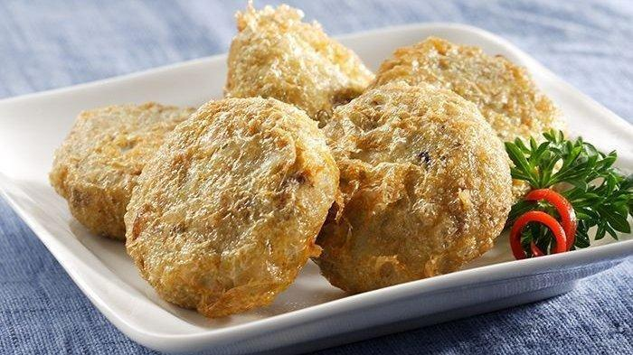
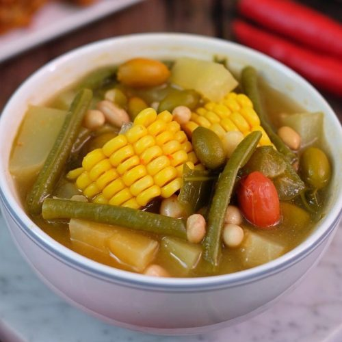
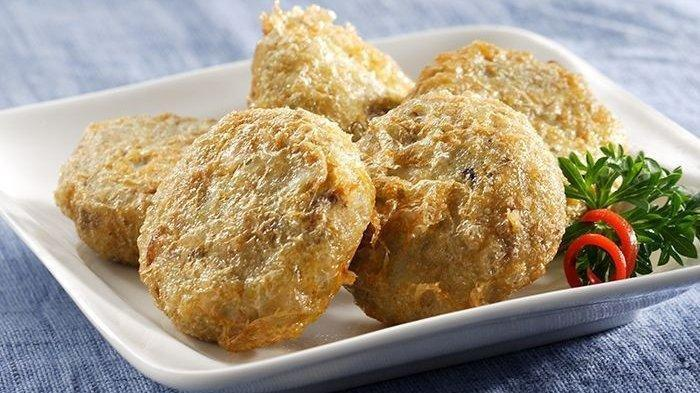
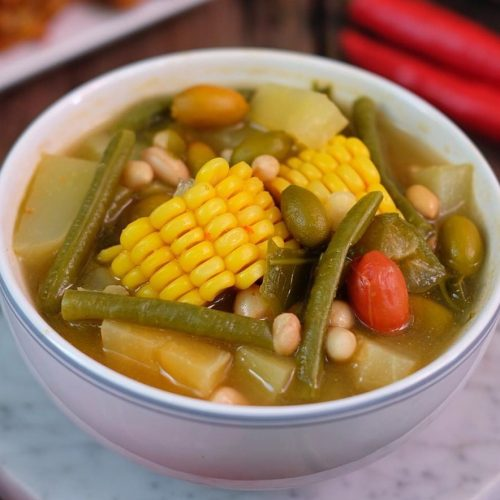

About Warung Tegal GGWP
Warteg Fiktif sejak 2021
Warteg Fiktif yang tidak pernah didirikan namun dibuat oleh Bagaskoro Kuncoro Ardi dengan tujuan memenuhi tugas Pemrograman Web B 2021 yang menyajikan berbagai masakan rumahan seperti Telur Dadar, Ayam Goreng, Sayur Asem, Telur Balado, Perkedel, Tumisan, dll.
Menu Masakan
Ayam Goreng
Ayam Goreng spesial Warteg GGWP dengan cita rasa masakan rumahan.
Ikan Goreng
Ikan Goreng spesial Warteg GGWP dengan cita rasa masakan rumahan.
Perkedel
Perkedel Kentang khas Warteg GGWP yang dibuat dengan kentang segar tiap harinya.
Sayur Asem
Sayur Asem yang segar dengan jagung, kacang panjang, dan sayuran yang tentunya menyehatkan.
Telur Dadar
Telur Dadar khas Warteg GGWP dengan racikan bumbu spesial.
Telur Balado
Telur Balado khas Warteg GGWP dengan cita rasa pedas manis.
Tumis Pare
Tumis Pare pedas untuk para pecinta pare.
 



Contact
Kami menyediakan full-service catering untuk acara apapun, besar maupun kecil. Kami memahami kebutuhan anda dan kami akan menyediakan masakan kami untuk memuaskan pelanggan kami tercinta, baik dari segi penampilan maupun rasa. Hubungi kami.
Warung Tegal GGWP, Jl. Imajinasi No.99, Surabaya, Jawa Timur
No. HP - 081234567890
Email - warteg.ggwp@catering.com